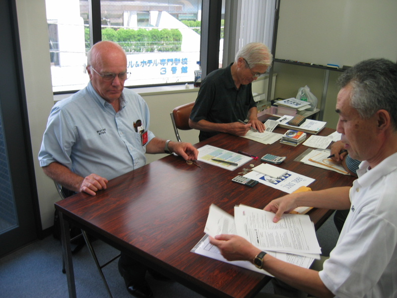

N7NG・ウエイン・ミルズ氏を迎えてJARL会議室で行われたDXCCフィールドチェック
| 6m Today ! |
[Back Issues Aug.2006]
TIME:UTC(JST-09:00)
Report from JA1RJU (PM95sq)
31.Aug.2006(10:00b)
*BY-TV 01:00- 49.750 --
30.Aug.2006(15:00c)
*BY-TV 01:00- 49.750 --
VR2SIX/B 07:25- 50.075 CW Beacon
VR2SIX/B 10:00- 50.075 CW Beacon still good!
29.Aug.2006(15:00c)
*BY-TV 02:00- 49.750 --
*9M-TV 02:00- 48.240 --
28.Aug.2006(15:00b)
*BY-TV 00:00- 49.750 --
27.Aug.2006(15:00b)
*BY-TV 00:00- 49.750 -- weak
26.Aug.2006(15:00d)
*BY-TV 00:00- 49.750 --
VR2SIX/B 02:20- 50.075 CW Beacon
*9M-TV 03:30- 48.240/260 --
BD4SI 04:10 50.110 SSB
BD4SI 05:20 50.110 SSB
25.Aug.2006(15:00c)
*BY-TV 00:00- 49.750 --
VR2SIX/B 02:30- 50.075 CW Beacon
VR2SIX/B 12:05- 50.075 CW Beacon again!
24.Aug.2006(15:00c)
*BY-TV 01:00- 49.750 --
23.Aug.2006(15:00c)
*BY-TV 01:00- 49.750 --
VR2SIX/B 08:45- 50.075 CW Beacon
22.Aug.2006(15:00c)
*BY-TV 01:00- 49.750 --
VR2SIX/B 07:30- 50.075 CW Beacon
VR2SIX/B 10:05- 50.075 CW still good!
21.Aug.2006(15:00b)
*BY-TV 08:00- 49.750 --
*9M-TV 08:30- 48.240/260 --
20.Aug.2006(15:00b)
19-20.Aug 「ハムフェア2006」(東京・有明)
19.Aug.2006(15:00b)
19-20.Aug 「ハムフェア2006」(東京・有明)
18.Aug.2006(15:00d)
*BY-TV 00:00- 49.750 --
VR2SIX/B 05:32- 50.075 CW Beacon
BD9BA 09:09 50.110 SSB CQ
|
◎ いよいよ19日(土)〜20日(日)の2日間東京・有明で「ハムフェア2006」が開催される。 今年のキャッチフレーズは「ハムフェア楽しさ見つけて30年」。 30回を迎えた今年はハムフェアの開催の足跡やアマチュア無線家が残した楽しい思い出やイベントの記録、 写真などを展示して振り返る。 これに先立ち今年もDXCC申請の受付が17日、18日(10:00-15:00)の両日、巣鴨のJARL会議室(3F)で行われた。 今年はARRLからN7NG(ウエイン・ミルズ氏)が来日、JARLのフィールドチェッカーと供にフィールドチェックを行った。 フィールドチェックは19日(土)、20日(日)(10:00-16:00)の両日はハムフェアの会場で行われる。 今回はDXCCの336番目の新エンティティーに追加されたYU6・ モンテネグロ(MONTENEGRO)の申請や50MHzのEUのオープンでNEWを増やした局が殺到して混雑か？。 また、昨年までDXミーティングと共同で開催されていたJARL主催の「アイボールQSOパーティー」は、 19日(土)に東京ベイ有明ワシントンホテルでの単独開催となった。 |

17.Aug.2006(15:00b)
*BY-TV 00:00- 49.750 --
16.Aug.2006(15:00b)
*BY-TV 00:00- 49.750 --
15.Aug.2006(15:00b)
*BY-TV 00:00- 49.750 --
14.Aug.2006(15:00b)
*BY-TV 00:00- 49.750 --
13.Aug.2006(15:00d)
*BY-TV 00:00- 49.750 --
*9M-TV 02:30- 48.24/25/26--
VR2UW 02:50 50.107 CW
VR2SIX/B 02:50- 50.075 CW Beacon
VR2HF 03:26 50.110 CW
12.Aug.2006(15:00c)
*BY-TV 00:00- 49.750 --
(XX9TJS 10:30- 50.115 CW/SSB)
11.Aug.2006(15:00b)
*BY-TV 00:00- 49.750 --
10.Aug.2006(15:00b)
*BY-TV 00:00- 49.750 --
09.Aug.2006(15:00b)
*BY-TV 02:30- 49.750 --
08.Aug.2006(15:00c)
*BY-TV 00:00- 49.750 --
07.Aug.2006(15:00c)
*BY-TV 00:00- 49.750 --
06.Aug.2006(15:00c)
*BY-TV 00:00- 49.750 --
05.Aug.2006(15:00d)
*BY-TV 00:00- 49.750 --
VR2SIX/B 02:50- 50.075 CW Beacon
VR2XLN 04:57 50.115 SSB
BW2/JH0KHR 05:30 50.120 SSB
VR2SIX/B 05:40- 50.075 CW Beacon
VR2XMT 06:25 50.110 SSB
DZ50C 06:30 50.230 SSB op JF1IST qsl via JP1IOF
VR2RR 06:36 50.140 CW/SSB Suzuki-san qsl to VR2 Buro
BD7OH 07:00 50.110/130 SSB CQ/qso
VR2RR 07:15 50.140 CW
04.Aug.2006(15:00b)
*BY-TV 00:00- 49.750 --
03.Aug.2006(15:00b)
*BY-TV 00:00- 49.750 --
02.Aug.2006(15:00c)
*BY-TV 00:00- 49.750 --
*9M-TV 02:30- 48.240/260 --
01.Aug.2006(15:00c)
*BY-TV 00:00- 49.750 --
*9M-TV 07:00- 48.24/25/26--